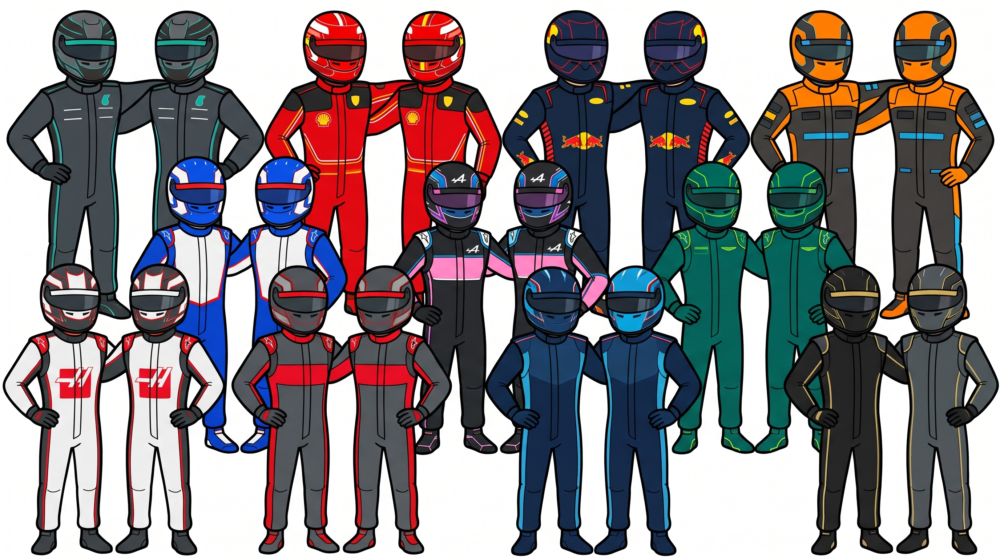

PILOTI
Ecco una breve descrizione dei piloti della Formula 1.
| Scuderia | Piloti 2026 | Profilo e Statistiche Principali (05/11/2026) |
|---|---|---|
| Mercedes | Andrea Kimi Antonelli | Debutto nel 2025 al Gran Premio d'Australia. Nel 2026 ha raggiunto le 9 vittorie e i 16 podi in carriera, conquistando il primo titolo mondiale della sua carriera. |
| George Russell | Debutto in F1 nel 2019. In carriera ha accumulato 8 vittorie e 32 podi. | |
| Ferrari | Lewis Hamilton | Debutto nel 2007 al Gran Premio d'Australia. Sette volte campione del mondo, guida la griglia con 106 vittorie, è il pilota più vincente nella storia della F1. |
| Charles Leclerc | Debutto nel 2018. Ha all'attivo 9 vittorie e 56 podi. | |
| McLaren | Lando Norris | Debutto nel 2019. Talento cristallino e attuale campione del mondo in carica (2025). |
| Oscar Piastri | Debutto nel 2023. Pilota giovane, molto promettente con un potenziale di crescita elevato. | |
| Red Bull Racing | Max Verstappen | Debutto nel 2015. Pluricampione del mondo, rappresenta uno dei piloti di maggior successo della F1. |
| Isack Hadjar | Giovane promessa, approdato a tempo pieno nella massima categoria dopo i successi nelle formule minori. | |
| Racing Bulls | Liam Lawson | Debutto nel 2023. Pilota neozelandese entrato nel programma Red Bull, noto per la grande affidabilità in gara. |
| Arvid Lindblad | Uno dei più giovani talenti emergenti del vivaio britannico a fare il salto in Formula 1. | |
| Alpine | Pierre Gasly | Debutto nel 2017. Esperto pilota francese, ha conquistato una vittoria storica a Monza e numerosi piazzamenti a podio. |
| Franco Colapinto | Debutto nel 2024. Pilota argentino capace di mettersi subito in mostra per grinta e velocità d'adattamento. | |
| Haas | Oliver Bearman | Debutto nel 2024. Giovanissimo talento della Ferrari Driver Academy. |
| Esteban Ocon | Debutto nel 2016. Ha conquistato una vittoria in carriera in Ungheria e garantisce costanza di rendimento. | |
| Audi | Nico Hülkenberg | Debutto nel 2010. Veterano con centinaia di gare all'attivo, scelto per guidare l'ingresso del nuovo progetto Audi. |
| Gabriel Bortoleto | Talento brasiliano ed ex campione in Formula 3, salito di categoria rappresenta uno dei nuovi talenti della F1. | |
| Williams | Carlos Sainz Jr. | Debutto nel 2015. Pilota molto esperto, plurivincitore di Gran Premi, porta il bagaglio tecnico sviluppato in Ferrari e McLaren. |
| Alexander Albon | Debutto nel 2019. Leader tecnico della scuderia, noto per le straordinarie capacità di difesa e gestione degli pneumatici. | |
| Aston Martin | Fernando Alonso | Debutto nel 2001. Due volte campione del mondo, una leggenda dello sport con un'esperienza e una visione di gara molto acute. |
| Lance Stroll | Debutto nel 2017. Ha conquistato una pole position e 3 podi in carriera, rappresentando una presenza fissa nel team. | |
| Cadillac | Valtteri Bottas | Debutto nel 2013. Esperto pilota finlandese, ha 10 vittorie in carriera ed è il punto di riferimento del nuovo team americano. |
| Sergio Pérez | Debutto nel 2011. Veterano messicano, plurivincitore in F1 e specialista dei circuiti cittadini. |

Tutti i piloti della F1 2026